Minhas Tecnologias
Notion
Figma
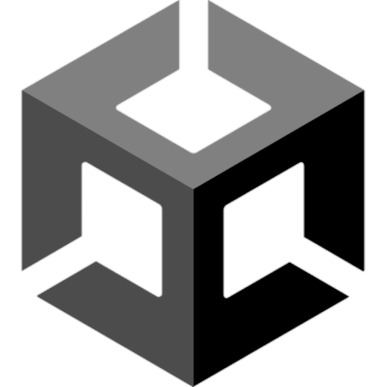
Unity
Godot
Git
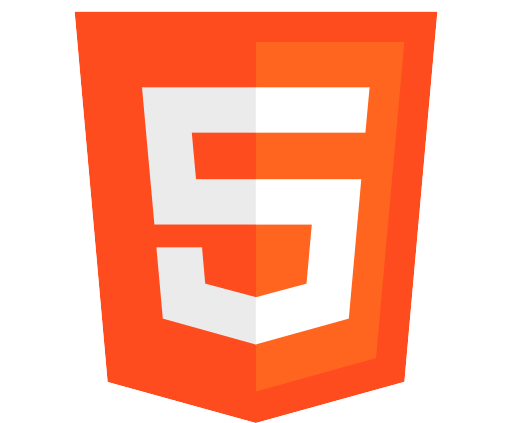
HTML
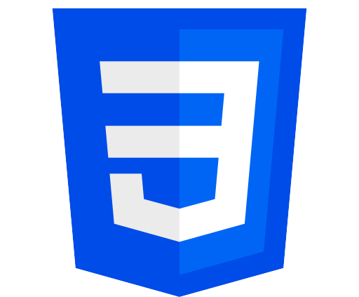
CSS
Miro
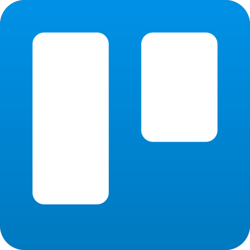
Trello
Inkscape
Excel
Olá! Sou estudante de design de jogos e programação, estou me preparando para ter minha primeira experiência de trabalho com desenvolvimento de jogos
Conhecimentos sobre as Engines Unity e Godot
Experiência em criação de documentos GDD
Habilidades com artes 2D para jogos
Habilidades com design de UI/UX 2D para jogos
Conhecimento em programação com as linguagens C# e GDScript
Conhecimento em inglês em nível intermediário / avançado
Conhecimento em versionamento de código com Git
Conhecimento em HTML e CSS para criação de páginas web
Experiência em tradução e localização para jogos
Idealização e aplicação de diálogos e puzzles para jogos
Notion
Figma

Unity
Godot
Git

HTML

CSS
Miro

Trello
Inkscape
Excel
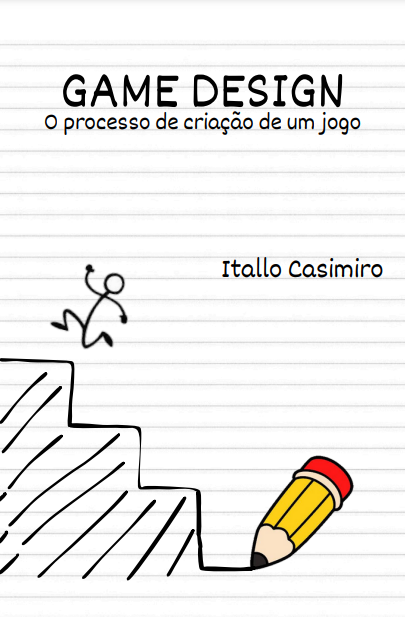
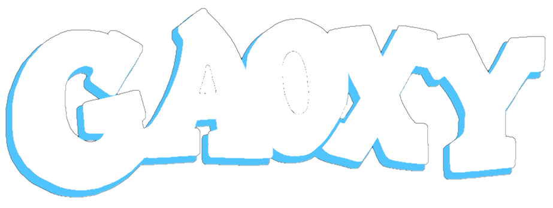
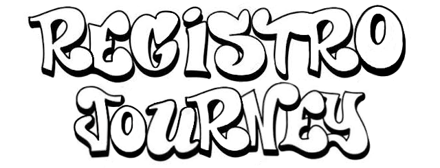
O Registro Journey é uma newsletter onde eu posto semanalmente (todas as quartas-feiras) um registro falando sobre o que fiz na semana no contexto de desenvolvimento de jogos.
O objetivo dessa newsletter é deixar registrado toda a minha jornada até que eu consiga realizar o meu objetivo de vida, para que eu possa ler tudo novamente e ver o meu progresso ao longo dos anos.
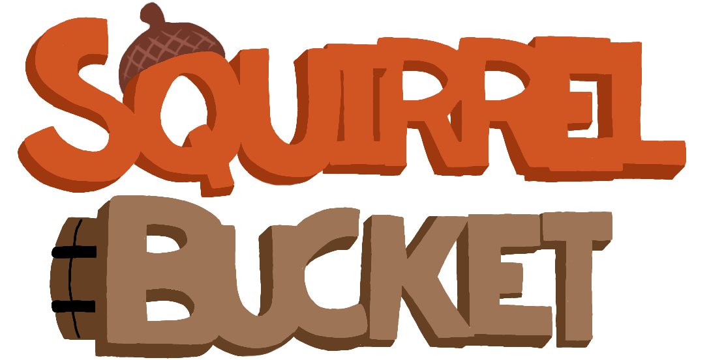
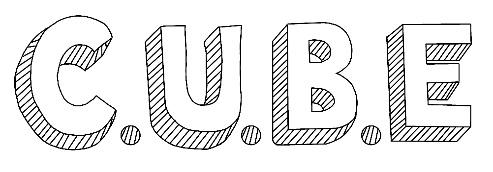
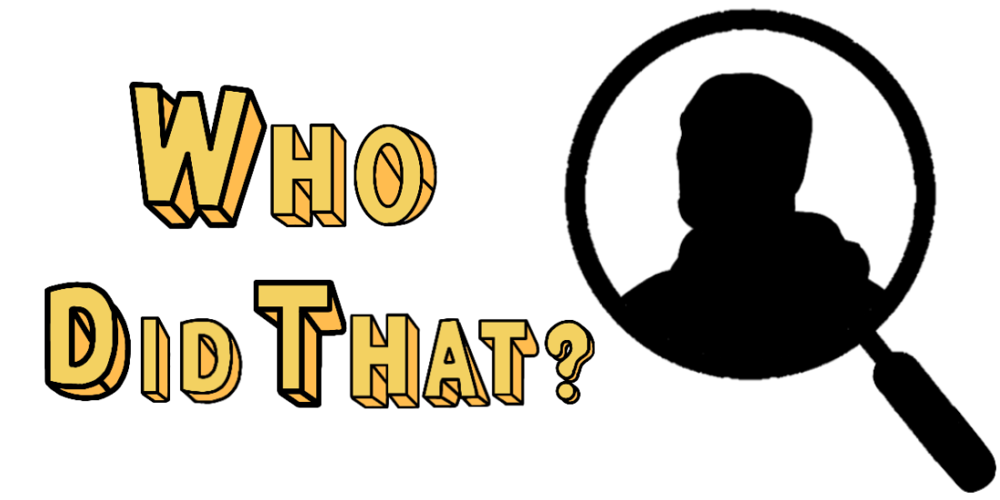
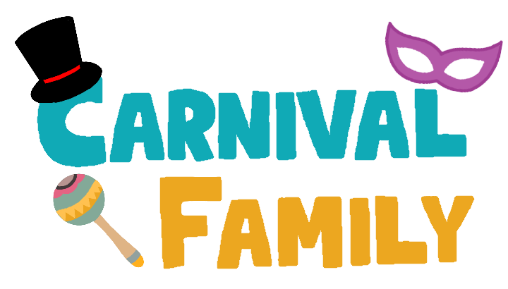
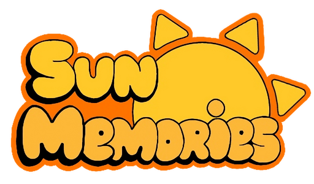
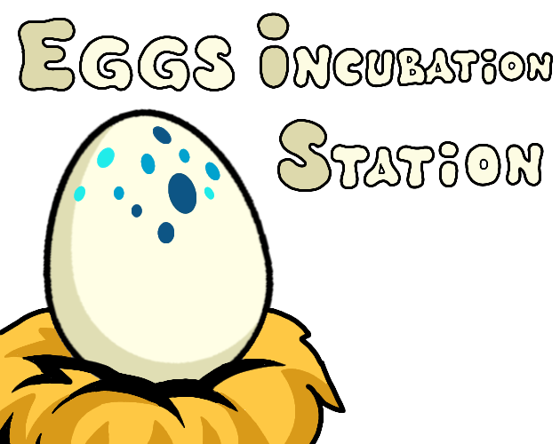
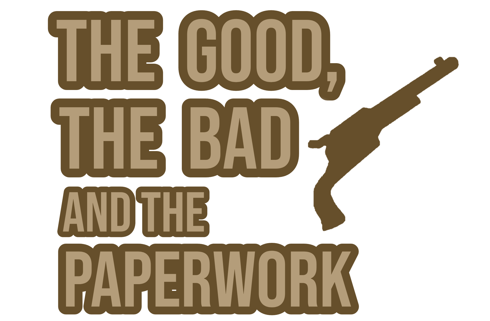